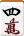
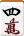
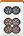
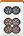
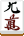
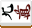
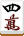
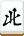
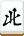

點數計算
前面我們已經解釋了有哪些牌型是可以胡的，接下來要說明的就是如何計算點數。每當有人胡牌的時候，就必須根據牌型的「飜」以及「符」（底下解釋）兩個要素計算出要支付的點數、再看是自摸和還是榮和以及其他因素決定點數怎麼分配。點數計算大概是日本麻將規則當中最複雜的一個環節，底下我們一步一步慢慢解釋要怎麼計算點數。
確定飜數
首先第一個步驟是要先確定胡的牌型至少有一種不是懸賞牌的役，要不然就算錯和犯規（見後文）。接著就是要算出總共有多少種的役，以及它們的飜數總和是多少。這裡面有幾個要點：
必須要能夠正確分解、役才算成立
從一盃口的例子中我們就可以了解，並不是說牌型中有所需的牌就能夠達成役，必須要能夠按照役的型式正確地分解才算。
舉例來說:

 



 自摸
自摸
這個牌型乍看好像有三四五萬的一盃口，可是因為實際上這個牌是分解成：
因此並沒有一盃口，只有「斷么九、門清自摸」而已。
如果一組牌可以用兩種以上的方式分解成胡牌型的話，那只能夠選擇其中一種分解方式得到的役，別種分解方式產生的役不能算。
舉例來說：


 自摸
自摸
這個牌可以做三種不同的分解，得到的役不盡相同：
平和、一盃口、自摸
平和、一盃口、自摸
三暗刻、自摸
這三種分解法只能選一種，然後就依照會得到的役計算飜數。上面的例子中算出來剛好都是三飜，所以只剩符的問題而已；但是如果有玩例如一色三順或三連刻等等的地方役（見後文）的話，後兩者可能就會變成五飜以上，這種時候就要根據高點法選擇較大的分解（底下解釋）。
每個役只能被計算一次
有的時候，雖然一個牌型可以分解出兩組同名的役，但是同一個役還是只能算一次，不能重複計算。
舉例來說：


 
自摸

自摸
可能會有人說上面這個牌型當中存在有兩組的三色同順，但是無論如何三色同順都只能算一次，而這個牌就應該被稱為「三色同順、一盃口、斷么九、門清自摸」，總共是五飜。
胡了上位役的時候，其下位役不計算
麻將當中有一些役之間彼此存在所謂「上位役」和「下位役」的關係，這可以形容成一個役是另外一個役的更進階版。當上位役被達成的時候，我們就不會去計算對應的下位役，這是因為當初在制訂上位役的飜數的時候就已經把下位役的存在也考慮進去了，如果又去計算下位役那就等於是重複計算，違反了前一個原則。
在通常役當中，只有少少幾個組合是上下位役的關係，而且也都很容易理解，不會很難記的：
(1)「雙立直」是「立直」的上位役，
(2)「清一色」是「混一色」的上位役，
(3)「二盃口」是「一盃口」的上位役，
(4)「純全帶么」是「全帶么」的上位役，
(5)「混老頭」也是「全帶么」的上位役。
以通常役來說這類情況就只有上述幾種，因此不會很複雜；但是如果各位打算玩一些地方役（見後文）的話，可能會需要把更多上下位役的關係確認出來，才不會造成飜數的計算上出現不合邏輯的現象。
一旦胡了役滿役，較小的役通通不計
這是一個日本麻將的一個慣例；假如胡了役滿役，那麼比較小的役就算未必會被包含也一律通通不計，包括立直、門清自摸、懸賞等等都不算。
舉例來說，就算胡了混一色的四暗刻，根據這個規定，役名仍是只叫「四暗刻」而已，沒有加上混一色。基於這個規定，就算除了役滿役之外還有一堆懸賞，也沒辦法累計成雙役滿。
不過，在多數的情況下，同時胡了多個役滿役是可以累計成雙役滿或更多倍的役滿的，這就是所謂的役滿複合。例如最有可能的就像是「小四喜、字一色」之類的複合。
在某些版本的青天井規則（見後文）當中沒有這種慣例，就算胡了役滿，也是可以繼續計算較小的役（但是這個時候就必須考慮役滿役跟其他較小的役之間是否存在上下位役的關係了）。
高點法（高点法）
高點法是計算時的一個重點，它的意思是說如果一組牌不只一種解釋方式的話，那應要盡可能地把它的點數解釋得最大。要注意的是高點法是強迫的，就算胡牌的人基於戰術考量而想要將牌解釋成比較小的點數也是不能允許的，一定要解釋成最大的牌才行。
由於到最後我們會了解到飜數對點數的影響遠大於符對點數的影響，因此在這個階段我們應優先把飜數解釋得越大越好。舉例:

 自摸
自摸
這個牌可以解釋成「七對子」或是「二盃口、純全帶么」，很明顯地後者的六飜遠勝過前者的二飜，因此應該要做後者的解釋。有的時候，即便是很相近的牌型，也有可能出現因為些微的分解不同而導致大小不同的情況，例如：


 自摸
自摸
我們可以用兩種方式來解釋這個牌是怎麼胡的：
自摸
，或者
自摸
相對於第一種解釋方式只有「門清自摸」來說，第二種解釋方式會多出一個「平和」出來，多一飜，因此應該要做第二種解釋才對。這裡面牽涉到一個「聽牌型態」的概念，我們底下立刻會更詳細地解釋。
聽牌型態
在我們解釋「符」的計算之前，我們先稍微解釋一下關於聽牌型態的概念。
在四面子一雀頭的胡牌型當中，依照聽的那張牌是怎麼樣跟其他的手牌組合，總共可以分成五個類型的聽牌，分別是「單騎聽」、「嵌張聽」、「邊張聽」、「兩面聽」和「雙碰聽」。
單騎聽（単騎待ち）
假如聽的牌是要跟手牌當中另外一張同樣的牌組成最後的雀頭，那就叫做單騎聽，
例如：
 聽
聽
上面的情況是要等紅中出現以組成最後的雀頭。單騎聽有一種特殊的情況是已經叫牌或暗槓了四次、導致手中只剩下一張不是曝光牌的牌，一定只能等雀頭，這個狀態叫做「裸單騎」。
嵌張聽（嵌張待ち）
嵌張聽是指聽的牌要用來插進兩張隔了一張的數牌以完成最後的順子，
例如：

 聽
聽
上面的情況是只要出現四萬、就可以插進三萬和五萬中間構成最後的順子。補充一提，像這邊的三萬與五萬這種中間只要再插入一張就可以構成順子的兩張牌，稱為一個「嵌搭子」（或者「搭子」在日文中也常常寫成「塔子」）。
邊張聽（辺張待ち）
邊張聽是指聽了數牌的 3 或 7、目的是跟手牌中已經有的 12 或 89 構成最後的順子。
例如：
 聽
聽
這邊的情況是聽七筒以構成七八九筒的順子。而像這邊的八九筒這種旁邊再來一張就可以構成順子的兩張牌稱為一個「邊搭子」。
兩面聽（両面待ち）
兩面聽是一個比較容易混淆的名詞，因為它跟前面的「二面聽牌」（即聽牌聽兩張的情況）長得太像了，可是這邊的「兩面聽」是另一種特殊用語，指的是聽的牌要跟兩個不含 19 的連續數牌湊成最後一個順子的情況。
例如：
 聽
聽
這邊聽的是一四萬，任何一張都可以跟跟二三萬構成最後的順子。可以想見的，像二三萬這種不含 19 的兩個連續數牌就叫「兩搭子」。
雙碰聽（双碰待ち）
雙碰聽是指聽的牌會跟手中一組對子構成最後的一個刻子。在這種情況當中，手中一定還有另外一個對子當雀頭，因此在胡牌之前手牌中是有兩個對子、而無論再出現哪一張都可以胡，因此才叫雙碰聽。
例如：
 聽
聽
這邊的情況是有五萬和紅中兩個對子，兩張都可以胡。
多面聽牌的情況
在多面聽牌的情況當中，每一張聽的牌視其組合方式而定，都會被歸類為上述五種聽牌的其中一種，而且聽的每張牌所對應的聽牌類型可能各不相同、甚至可能不只一種解釋方式。
例如:

這個牌聽的是一二三四五八萬。這個聽牌一共可以解釋成下面幾種類型的聽牌：
兩面聽
兩面聽
單騎聽
雙碰聽
雙面聽
於是，一萬和八萬是兩面聽，二四萬可以解釋成兩面聽或雙碰聽，三萬是單騎聽，五萬可以解釋成兩種不同的兩面聽。
我們再來看一個更大的例子，純正九蓮寶燈：
這是筒子的九面聽牌，其中一九筒是雙碰聽（或者也可以解釋成兩面聽），二八筒是單騎聽、三七筒是邊張聽（或兩面聽）、四六筒是兩面聽，而五筒則是單騎聽。
當然這邊的目的只是舉例，實際上只有當胡的牌是四飜以下、需要算符的時候才需要考慮聽牌類型的問題。
確定符
在確定飜數之後，假如算出來在五飜以上，那由於肯定已經有滿貫以上（底下解釋），因此就用不著計算符，可以跳過這一步驟；然而如果算出來是四飜以下，那就必須更進一步計算有多少符。符跟飜一樣是累計的，看看底下這些條件滿足多少就可以有多少符。我們一步步說明計算符的方式。底下這些計算都是針對「四面子一雀頭」型的胡牌做計算，而七對子則待會會有特別的規定；至於國士無雙，因為老早超過五飜了，所以不用算符。
副底
首先不管胡什麼牌，一開始都有初始的 20 符，這稱為「副底」。
刻子、槓子與雀頭
牌型當中有再多的順子也不會有符；但是如果有刻子或槓子就會有符，雀頭也有可能有符。
首先，刻子的符是從 2 符起跳。如果是么九牌(1、9和字牌)的刻子，那就會乘以兩倍；或者如果是暗刻，那也會乘以兩倍。
舉例:
 2符
4符
4符
2符
4符
4符
 8符
8符
槓子則是從 8 符起跳，然後一樣么九牌的話乘兩倍、暗刻的話乘兩倍。
舉例:
 8符

8符
 16符
16符
32符
16符
16符
32符
最後，如果雀頭是三元牌、場風或自風的話，那麼就有 2 符，不然就沒有符。如果是連風牌的雀頭那會是 4 符。
聽牌的符
聽牌型態的符說起來很簡單，就是單騎聽、嵌張聽和邊張聽算 2 符，兩面聽和雙碰聽沒有符就對了。
不過要特別注意的是，如果可以解釋成很多不同類型的聽牌，那只能選其中一種計算，而且只能選擇跟最後所胡的牌有關的聽牌類型。
到這邊我們可以更精確地描述「平和」到底是一個什麼樣的東西。說起來平和就是一個到目前為止除了副底之外完全沒有符的牌型（除此之外還要門清就是了），也就是說它沒有任何刻子或槓子、雀頭不是役牌、而且也沒有聽牌的符。其中注意到雙碰聽本身雖然沒有符，但是它會導致刻子的符，所以平和一定是兩面聽。最後，平和不一定全部都是數牌，它的雀頭可以是客風，因為客風的雀頭也是沒有符的。
胡牌的符
如果是門清榮和的話，那麼還可以再獲得 10 符。
而如果是自摸和的話，無論是否門清都有 2 符。不過這裡面有個例外是，如果是自摸胡了平和的話，這 2 符就不予計算（這個規則稱為「自摸八」）。
進位到十位數
把上述的符全部加起來之後，假如剛剛好是 10 的倍數那就到此為止；而如果有零頭的話，就進位到 10 位。這樣算出來的結果就是最終的符。
平和加符
假設剛好胡了非門清且除了副底之外完全沒有符的牌，即榮了長得像平和的非門清牌（喰い平和），那麼雖然理論上它只有 20 符，但是我們特別規定把它增加 10 符變成 30 符。這個增加的 10 符稱為「平和加符」。之所以有這個規定是為了要讓「一飜 20 符」這種情況不會出現，以使得無論在任何情況下，胡牌所獲得的點數至少都有一千點以上。
七對子的特殊規定
七對子有個額外的特別規定，就是它永遠是當作 25 符計算，同時很重要的是我們不會把它進位成 30 符，而且不管是自摸還是怎樣它就是 25 符。因此，通常點數表當中會有特別的一列是針對 25 符所設置的。